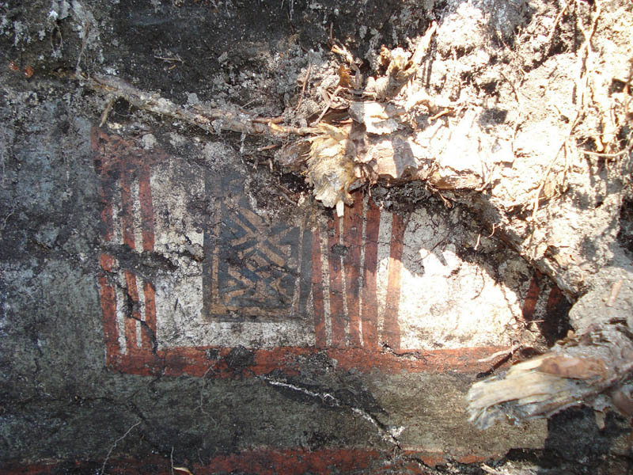
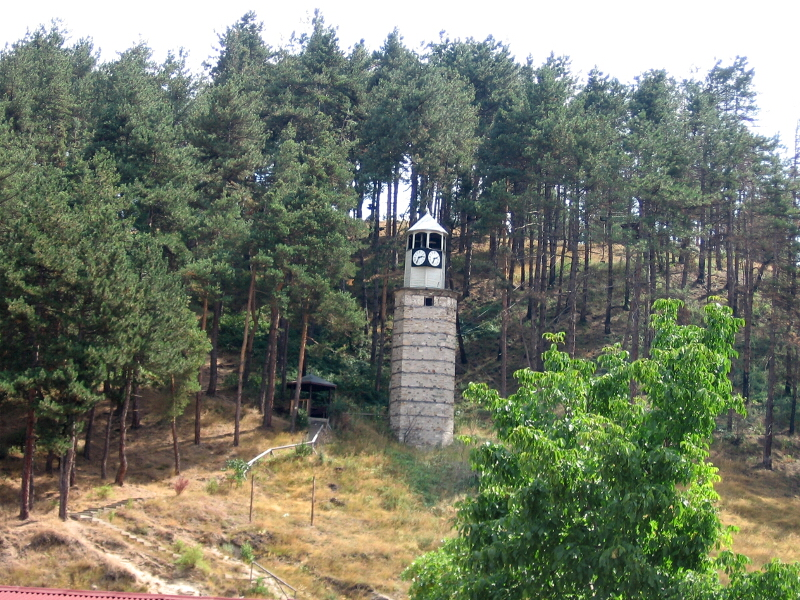

Разкопките показват, че селището е застроявано на два пъти – през ранния и през късния неолит. Постройките били изградени от обмазан с глина плет и имали правоъгълен план. Вътре в тях са открити следи от огнище и глинени пещи за изпичане на хляб. Намерените керамични фрагменти свидетелстват, че хората, живели тук, използвали в ежедневието си съдове от недобре пречистена глина, направени грубо без помощта на грънчарско колело.
Но са намерени и фино изработени купи, паници, високи чаши и по-рядко гърнета, повечето едноцветни или с украса от рисувани геометрични орнаменти. Това показва,че някои от членовете на общината вероятно са се специализирали в грънчарството и са развили професионални умения.Това предположение може да се направи и за оръдията от камък, кост и рог, намерени в изобилие в селището. Вероятно с произвежданите изделия се осъществявал търговски обмен между селищата в района. Откритите многобройни тежести за вретено и отвесен тъкачен стан свидетелстват, че жителите на селището познавали и тъкачеството.
При разкопките са намерени множество глинени антропоморфни идоли, култови съдове и масички, миниатюрен модел на жилище от глина, който засега е най-ранният от моделите, намирани в българските земи. Селището при Ракитово е много важно археологическо откритие. Намира се на близо 750м. надморска височина, в планината, където по онова време рядко се заселвали хора. Неговите обитатели се препитавали главно с отглеждане на животни – говеда, овце, кози и свине, както и с лов на елени, сърни и глигани, а земеделието заемало второстепенно място в поминъка на семействата.
Някои от помещенията в Ракитово се различават от жилищните постройки. Основите на техните стени са от ломени и речни камъни, а във вътрешността им са намерени олтари и множество култови предмети. Това води до предположението, че тези постройки са имали култово предназначение и в тях са извършвани религиозните обреди на общността. Възможно е те да са изпълнявани от жреци – служители на общородовите и общоплеменните култове. Открити са и два фрагмента от глинени съдове, върху които са изобразени човешки ръце с три или четири пръста. Съдовете вероятно също са свързани с култови обреди. Проучването показва, че духовният живот на обитателите бил наситен със сложни и разнообразни вярвания – към майката прародителка, към жилището, мъртвите и други.
Галерия